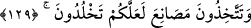
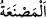
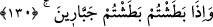

alay ederek onları maskaraya alırlardı.”
Büyük müfessirler arasında sayılanlardan bazıları bu âyetteki “ ”in mânâsının,
onların yoldan gelip geçenler için diktikleri ve binâsında mübalağaya kaçtıkları
nişan/işâret demek olduğu görüşündedirler. Çünkü onlar, gelip geçenlere yol göstermek
için büyük binalar inşâ ediyorlardı. Bu abes sayıldı. Çünkü yolcular yollarını zaten
yıldızlarla tesbit ediyorlardı; bu yeterliydi.
Müftî Sa’dî der ki: “Bu husus tartışmalıdır. Çünkü gündüzleyin yıldız olmaz. Bazen
de bulutlardan ötürü geceleyin yıldızların gizlendiği olur.”
Fakir (Bursevî) der ki: Şâyet bu binalar, mesela Bağdad ve Mekke arasındaki yol
işaretleri gibi kendisinden daha fazla istifade için ise nasıl abes olur. Gündüz yol
tesbiti, ya yol işaretleri ile veya toprağı koklamakla olur. Nitekim daha önce geçmişti.
[20]
129. Temelli kalacağınızı umarak sağlam yapılar mı ediniyorsunuz?
“Temelli kalacağınızı umarak” dünyada ebedî kalma emel ve arzusuyla, yâni bunu
uman kimsenin yaptığını yaparak “sağlam yapılar” el-Müfredât’ta belirtildiği gibi
yüksek mekanlar ya da es-Sıhâh ve el-Kâmûs’ta belirtildiği gibi yer altında su arkları
“mı ediniyorsunuz?” bunun için mi onları böyle sağlam yapıyorsunuz?
“
” havuz gibi yağmur sularının toplandığı yere denir. Çoğulu “
” gelir.
Büyük havuzlar demektir.
“
” teşbih içindir. Yâni sanki ebedî kalacakmışsınız gibi demektir.
Hûd (a.s.)’ın kavmini, önce malı boş yere zâyi etmekle azarladı. İkinci olarak uzun
emel ve gaflete delâlet edecek şekilde müstahkem binâlar inşâ etmekle tenkîd etti.
Sâib der ki:
Bu gafillerin başında olan tûl-i emelin ne olduğunu bilir misin?
Güvercin yuvasında yuva yapan bir yılandır o
130. Yakaladığınız zaman, zorbalar gibi mi yakalıyorsunuz?
Siz bir kavmi kırbaç veya kılıçla “yakaladığınız” cezalandırıp intikam aldığınız
“zaman, zorbalar” acımadan, te’dib gayesi gütmeden ve işin sonunu düşünmeden
tasallutta bulunan zâlimler “gibi mi yakalıyorsunuz?”